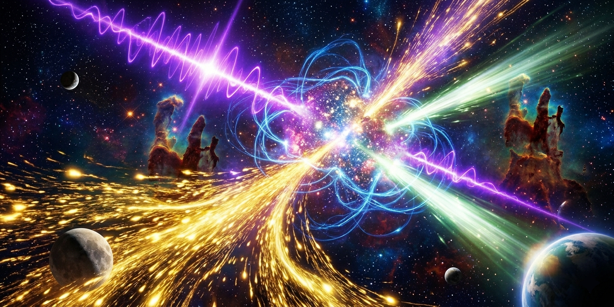
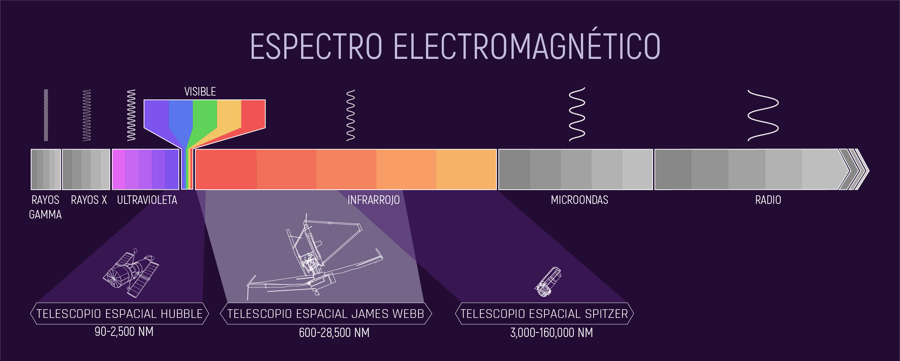
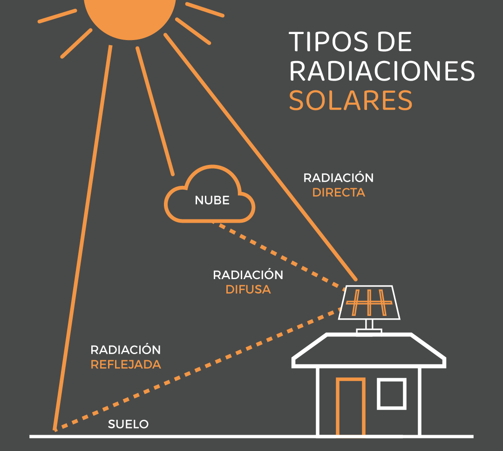
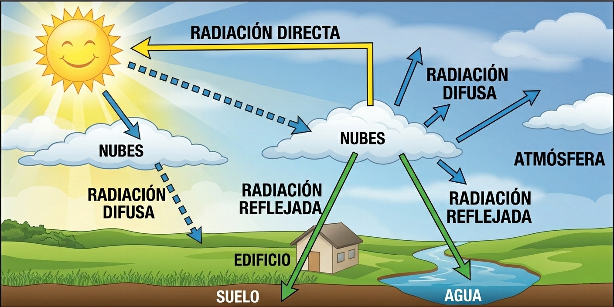
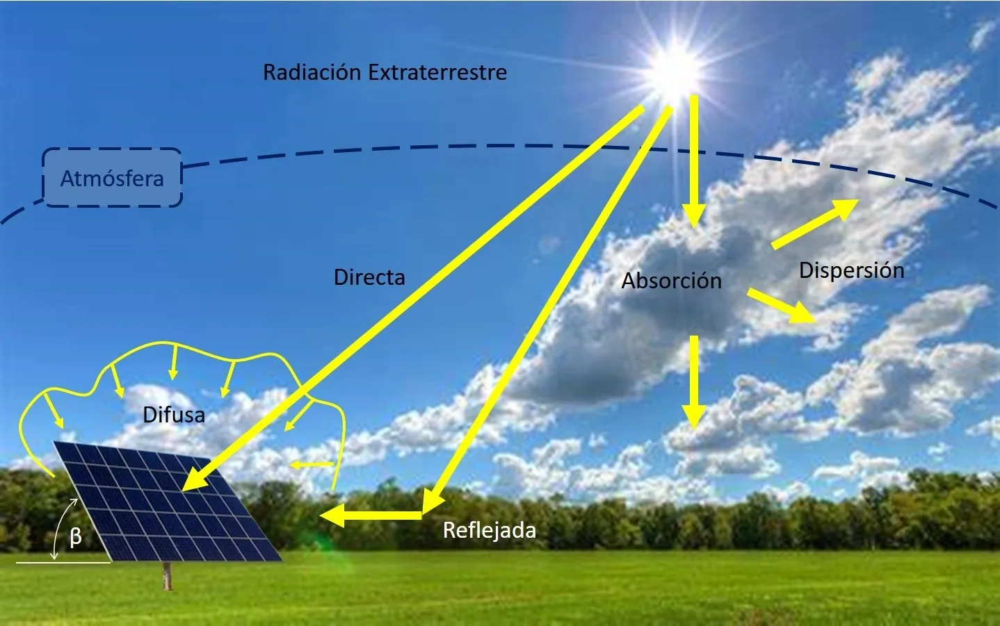

Contenidos de la clase
1 - Definición y tipos de radiación
La radiación es una forma de energía que se propaga a través del espacio en forma de ondas electromagnéticas o partículas, y puede ser ionizante o no ionizante según su capacidad de afectar la materia.

¿La luz es lo mismo que la radiación? La respuesta es... ¡no! La luz visible es solo una pequeña parte del espectro electromagnético que el Sol, o cualquier estrella, emite. Además de la luz que vemos, el Sol también emite radiación infrarroja (que sentimos como calor) y radiación ultravioleta (invisible para nosotros, pero puede causar quemaduras en la piel y daños en materiales con el tiempo). De hecho, las tres —visible, infrarroja y ultravioleta— son formas de radiación electromagnética, solo que nuestros ojos evolucionaron para detectar solo una de ellas.

Fuente: NASA
Para los paneles solares, la luz visible e infrarroja son las más importantes, ya que son las que pueden ser convertidas en electricidad o calor útil para los edificios. Ya veremos esto en detalle en las secciones de fotovoltaica y termosolar.
Los tres tipos de radiación solar
Para dimensionar un sistema en una obra, primero hay que entender cómo llega la energía solar al techo. La radiación no es toda igual; se divide en tres formas que los paneles y colectores aprovechan de distinta manera:
-
Radiación directa (día despejado): Es la que llega directamente del disco solar sin sufrir desviaciones. Proyecta sombras definidas y es la más potente. En diseño arquitectónico, es la que debemos capturar con orientación norte.
-
Radiación difusa: Luz dispersada por nubes, polvo y atmósfera. Permite generar energía (aunque en menor medida) incluso en días nublados. En días muy nublados, puede representar hasta el 80-90% de la radiación total.
-
Radiación reflejada (Albedo): Luz que rebota en superficies cercanas (suelo, techo blanco, muro vecino). El albedo varía según la superficie: nieve (0.8-0.9), techo blanco (0.7-0.8), pasto (0.2), asfalto (0.1). En instalaciones modernas se usan paneles bifaciales que captan esta luz por su cara trasera.
Los mismos tres tipos, ahora en formato tarjeta para recordar rápido sus características clave:
Radiación directa
Llega directamente del disco solar sin desviaciones. Proyecta sombras definidas y es la más potente.
Radiación difusa
Luz dispersada por nubes, polvo y atmósfera. Genera energía incluso en días nublados (80-90% de la radiación total).
Radiación reflejada
(Albedo)
Luz que rebota en superficies cercanas (suelo, techos blancos, paredes). Los paneles bifaciales captan esta luz por su cara trasera.

La irradiancia global horizontal (GHI) es la suma de la radiación directa normal (DNI) proyectada sobre la horizontal más la radiación difusa horizontal (DHI):
- GHI = Irradiancia Global Horizontal (todo lo que llega al techo)
- DHI = Irradiancia Difusa Horizontal (luz dispersada por nubes y atmósfera)
- DNI = Irradiancia Directa Normal (rayos directos del sol, medidos perpendicularmente)
- θ (theta) = ángulo cenital (inclinación de los rayos respecto a la vertical)
💡 En la práctica: para un panel horizontal, si el sol está alto (θ pequeño), cos θ se acerca a 1 y el DNI aporta casi todo su valor. Si el sol está bajo, el DNI se reduce porque los rayos llegan más inclinados.
📐 Conceptos de obra: azimut e inclinación
Para maximizar la captación en el hemisferio sur, los paneles deben orientarse hacia el Norte geográfico (Azimut 0°). La inclinación ideal para captación anual suele ser igual a la latitud del lugar (ej. ~34° en Buenos Aires). Una mala orientación puede reducir la eficiencia hasta en un 40%.
2 - Energía solar fotovoltaica
Esta tecnología consiste en la conversión directa de la luz solar en electricidad sin partes móviles mecánicas. La magia ocurre en la escala cuántica mediante el efecto fotoeléctrico.
Los paneles están fabricados con materiales semiconductores dopados, principalmente Silicio. El panel tiene dos capas: una con exceso de electrones (capa N) y otra con falta de ellos (capa P). Cuando los fotones (partículas de luz) impactan contra la celda de silicio con la energía suficiente, "arrancan" los electrones de sus átomos. Al obligar a estos electrones libres a viajar por un circuito externo para volver a su lugar, se genera la corriente eléctrica.
Anatomía de un sistema para viviendas:
Conjunto de celdas conectadas en serie o paralelo. Generan Corriente Continua (CC), similar a la de una pila de automóvil pero a mayor escala. Potencias típicas: 400-600 Wp por panel.
Actúa como un peaje. Modera y estabiliza la tensión y el amperaje que baja del techo para no "freír" las baterías por sobrecarga. Puede ser PWM (más económico) o MPPT (más eficiente, +30% de captación).
Generalmente de Litio (LiFePO₄) o gel. Almacenan la energía química para suministrar electricidad durante la noche o en cortes de suministro. Las baterías de ciclo profundo tienen una vida útil de 3 a 8 años según el uso.
El equipo más vital. Transforma la corriente continua (CC) en corriente alterna (CA) a 220V/50Hz, haciéndola compatible con la heladera, el televisor y la red pública. En sistemas on-grid, el inversor también sincroniza la inyección a la red.
Datos reales (Argentina - Programa RenovAr):
- • Potencia: Más de 1.700 MW fotovoltaicos adjudicados entre 2016-2019.
- • Costo: Precios promedio de USD 40-60 por MWh, compitiendo con fósiles.
- • Material: Silicio monocristalino domina el 90% del mercado actual por su mayor eficiencia.
3 - Energía termosolar
A diferencia de la fotovoltaica (que busca luz), la energía termosolar utiliza la porción infrarroja del espectro electromagnético para producir calor. La transformación se realiza mediante colectores térmicos, por cuyo interior circula un fluido caloportador que aumenta su energía interna (entalpía) al absorber la radiación.
Baja temperatura (doméstico)
Son los clásicos termotanques solares de tubos de vacío o colectores planos. Funcionan bajo un principio físico fundamental: el efecto termosifón.
El agua caliente disminuye su densidad (se vuelve más liviana) y asciende de forma natural hacia el tanque de almacenamiento aislado. Simultáneamente, el agua fría, más pesada, baja por los tubos para ser calentada. Este ciclo ocurre sin necesidad de bombas eléctricas.
Alta temperatura (Industrial / CSP)
Conocidas como plantas CSP (Concentrated Solar Power). Utilizan inmensos campos de espejos (helióstatos) o cilindros parabólicos que siguen la trayectoria del sol.
Concentran la radiación en un punto focal, calentando sales fundidas o aceites térmicos a más de 400°C. Este calor extremo hierve agua, generando vapor a altísima presión que mueve una turbina acoplada a un generador eléctrico.
4 - El sol como material de obra
Para un técnico en construcciones, un panel solar no es un electrodoméstico; es un elemento estructural y funcional de la envolvente del edificio. Al proyectar una instalación en sistemas como el Steel Framing o cubiertas tradicionales, deben calcularse tres factores críticos:
Cargas estáticas (peso muerto)
Un panel moderno de 450W a 550W ronda los 22 a 27 kg. Sumado a la perfilería de aluminio de soporte, una matriz de 10 paneles añade casi 300 kg a la cubierta. Debe verificarse la flecha admisible en los perfiles PGC de la cabriada del techo.
Cargas dinámicas (succión por viento)
Los paneles montados en paralelo al techo (coplanares) sufren el "efecto vela" durante las ráfagas. La succión aerodinámica puede arrancar el sistema completo si las fijaciones (tornillos autoperforantes) no están correctamente ancladas a la estructura primaria. Según CIRSOC 102, la presión de viento varía por zona (I a V).
Integración arquitectónica (BIPV)
Building Integrated Photovoltaics. Son paneles que reemplazan materiales de construcción convencionales. Por ejemplo, vidrios semitransparentes fotovoltaicos en muros cortina (piel de vidrio). El desafío aquí es ocultar el cableado de CC dentro de las manguetas de aluminio sin permitir filtraciones de agua.
Mantenimiento y seguridad en obra
Riesgo eléctrico (DC)
A diferencia de la corriente alterna (AC) de casa, los paneles generan corriente continua (DC). Durante el día, los cables del techo siempre tienen tensión y no se pueden apagar con una llave general si no hay un seccionador de DC. Es vital usar herramientas aisladas.
Limpieza y sombras
El polvo o los excrementos de aves pueden reducir la eficiencia un 15%. La limpieza se hace con agua pura (sin detergentes) y nunca se deben pisar los módulos, ya que el peso humano rompe las celdas de silicio internamente.
5 - Investigación y desarrollo en Argentina
El aprovechamiento de la energía solar en Argentina no es solo una cuestión comercial, sino de soberanía tecnológica. Desde el año 1976, la Comisión Nacional de Energía Atómica (CNEA) lidera un programa de investigación, desarrollo y transferencia tecnológica en este campo.
A través de su Departamento de Energía Solar (DES), ubicado en el centro atómico constituyentes, los científicos y técnicos argentinos trabajan bajo tres pilares estratégicos:
- Desarrollo de aplicaciones solares de extrema resistencia para misiones espaciales y satélites.
- Implementación de sistemas fotovoltaicos terrestres para diversificar la matriz energética nacional (Programa RenovAr: +1.700 MW adjudicados).
- Investigación aplicada sobre nuevos dispositivos fotovoltaicos, como celdas de alta eficiencia y sensores ópticos de vanguardia.
6. Generación Distribuida (Ley 27.424)
Para un constructor, es fundamental entender que hoy los edificios no solo consumen, sino que pueden "inyectar" energía a la red pública. En Argentina, la Ley 27.424 regula la figura del Usuario-Generador pero hablaremos de eso en la clase 8.
El medidor bidireccional
A diferencia del medidor tradicional, este equipo registra la energía que entra de la red y la que el edificio inyecta cuando sus paneles producen más de lo que se consume.
Trámite de conexión
Requiere un certificado de instalación firmado por un profesional matriculado, asegurando que el inversor cumple con las normas de seguridad para no inyectar energía durante un corte de red (protección anti-isla).
📝 Actividades de la clase
Completá las siguientes actividades en tu carpeta o directamente en este documento. Las respuestas múltiple choice son interactivas: hacé clic en la opción que creas correcta.
Consigna: Investigá en internet o en los apuntes de la clase y respondé en tu carpeta:
- ¿Qué significa MPPT en un regulador de carga solar? ¿Por qué es más eficiente que un PWM?
- Investigá un caso real de generación distribuida en Argentina bajo la Ley 27.424. ¿De qué provincia es? ¿Qué potencia instaló?
- ¿Cuál es la diferencia entre un panel solar monocristalino y uno policristalino?
- Buscá el mapa de radiación solar de Argentina (Fuente: Secretaría de energía). ¿Cuál es la provincia con mayor irradiación y cuántos kWh/m²/día tiene?
1. ¿Cuál de los siguientes tipos de radiación es la que llega directamente del disco solar sin ser dispersada?
2. En el hemisferio sur, para maximizar la captación anual de un panel fijo, ¿hacia dónde debe orientarse?
3. ¿Qué componente transforma la corriente continua (CC) de los paneles en corriente alterna (CA) utilizable en una vivienda?
Consigna: Mirá las dos imágenes. Una representa correctamente la radiación directa, difusa y reflejada. La otra tiene un error conceptual.
📌 Instrucciones: Hacé clic en la imagen para seleccionarla (se marca con borde violeta). Usá el botón 🔍 para ampliarla sin seleccionar.

Opción A
Tres tipos de radiación: directa, difusa y reflejada.

Opción B
Tres tipos de radiación: rectas (directa), onduladas (difusa) y flechas desde el suelo (reflejada).
🔍 Nota: Las imágenes son ilustrativas. En la clase real, reemplazar los placeholders con diagramas reales.
Problema:
Un techista está instalando 12 paneles solares fotovoltaicos en una cubierta de chapa con estructura de acero galvanizado. Cada panel pesa 24 kg. La estructura de soporte (rieles y herrajes) agrega 45 kg adicionales.
- Calculá la carga muerta total (en kg) que soportará la cubierta.
- Si la superficie útil del techo es de 35 m², ¿cuántos kg/m² adicionales representa esta instalación?
- Mencioná dos precauciones que debe tomar el constructor respecto a la fijación de los paneles (mirá la sección "El sol como material de obra" si lo necesitás).
📚 Material complementario de la clase: